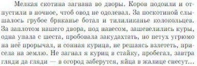

Прочитай фрагмент повести В.П. Астафьева «Последний поклон». Соотнеси диалектные слова с приведёнными значениями.(1) БоталДворы ЗаплотЖалица Поскотина - Место, где пасётся скот, пастбище возле деревни(2) БоталДворы ЗаплотЖалица Поскотина - Большой колокольчик, привязываемый к шее пасущихся коров и лошадей(3) БоталДворы ЗаплотЖалица Поскотина - Забор возле дома(4) БоталДворы ЗаплотЖалица Поскотина - Хлев для мелкого скота(5) БоталДворы ЗаплотЖалица Поскотина - крапива
 |
Выберите правильный ответ:
(1)
(2)
(3)
(4)
(5)
потому что в пропуски ставится: (1) Поскотина — пастбище; (2) Ботал — большой колокол / ботало; (3) Заплот — забор; (4) Дворы — усадьбы; (5) Жалица — крапива.